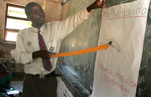
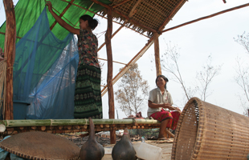
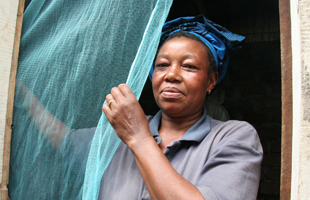

WHO/S. Hollyman
In Malawi, children learn about malaria and mosquitoes in school classes. A teacher explains about mosquitoes and malaria.

WHO/S. Hollyman
A woman hangs a mosquito net in the temporary dwelling in the fields (champka) that she and her husband are clearing to farm, Cambodia.
WHO/S. Hollyman
Bednets have to be changed once every 3-5 years. Here a fresh supply of bednets is distributed to residents in Patang village, Cambodia.
WHO/S. Hollyman
Education on malaria prevention can be taught in schools. School children participate in a class on malaria and how to protect themselves, Malawi.

WHO/S. Hollyman
A woman putting up a mosquito bednet, United Republic of Tanzania.
WHO/S. Hollyman
A man and his mosquito bednet, United Republic of Tanzania.